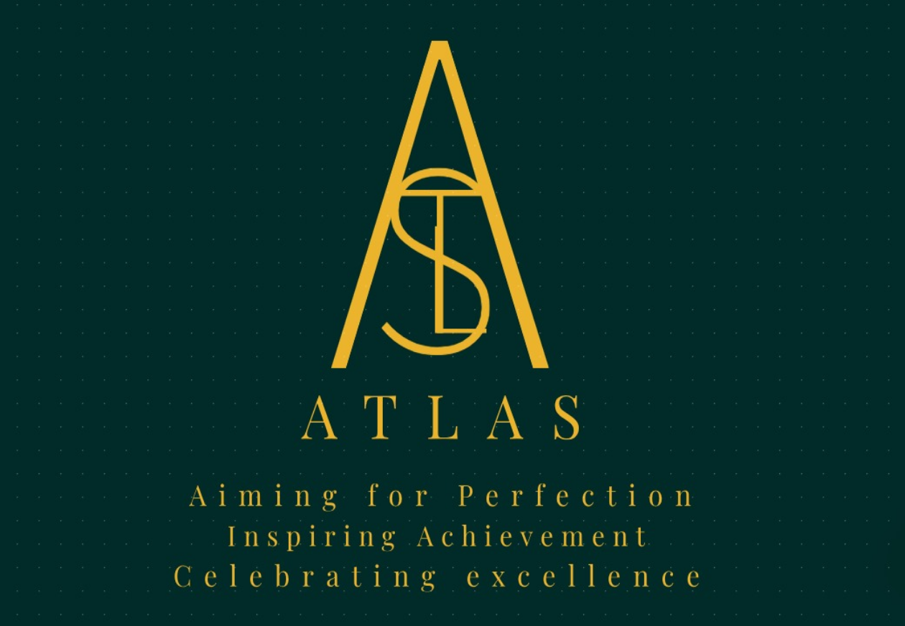

Atlas Club: A New Chapter in Dolna Day School
Atlas Club, the first official Student Club at Dolna Day School, was established on August 1st, 2024. The club's primary mission is to organize events and contribute to school activities. Additionally, Atlas Club oversees the Dolna Newsletter, serving as its parent organization.
The club currently operates with a team of dedicated individuals, including seven founding members, five class representatives, and several news-letter managment members and assistant members. Together, we work to enhance the school community through our initiatives and dedication.
